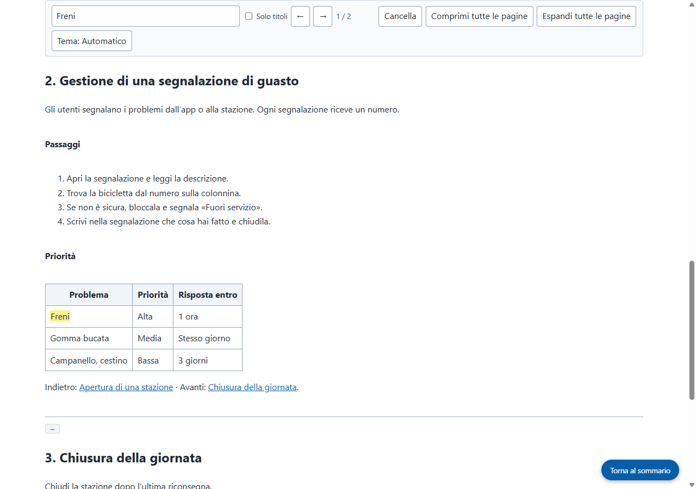

Risultati reali di Grab All Files
Quattro pagine del manuale riunite in un unico file HTML (Pro)
Partendo dalla pagina dell’indice di un manuale immaginario, sono stati seguiti i tre capitoli collegati e le quattro pagine sono state riunite in un unico file HTML. L’indice in alto porta a ogni capitolo e la casella di ricerca cerca in tutto il documento. I collegamenti tra i capitoli portano alla pagina corrispondente all’interno del file salvato. La figura è inserita nel file come immagine.
File di output
L’HTML salvato, aperto e cercato per «Freni» (schermata acquisita dal sito)

Come è stato ottenuto
- Pagina di origine
- /samples/source/it/bike-share-handbook/
- Estensione
- Grab All Files 5.8.20
- Browser
- Chrome 155.0.8059.85 (Windows 11)
- Piano
- Pro
- Creato il
- 2026-10-21
- Impostazioni
- Pagine: Segui i collegamenti di questa pagina (4 pagine)
- Aspetto: Facile da leggere
- Output: Con indice e ricerca (standard)
- Dati per l’IA: Non generare (predefinito)